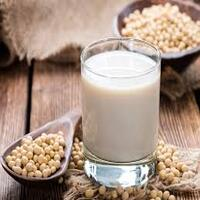

Our Products

Tofu / Soya Paneer
A versatile and healthy protein source, perfect for a variety of recipes.
Masala Tofu
Tofu infused with authentic Indian spices, ready to elevate your meals.

Soy Milk
A nutritious, plant-based milk alternative, rich in protein and calcium.

Soy Yogurt / Curd
Delicious and probiotic-rich soy yogurt, perfect for a healthy lifestyle.

Okara
A high-fiber by-product from soy processing, great for baking and more.